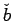
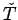

Next: About this document ...
Name: Calculus III
Exam 1
4 October 2000
My mind rebels at stagnation. Give me problems, give me work ... and I
am in my own proper atmosphere.
-Sherlock Holmes from The Sign of the Four by A. C. Doyle.
Instructions: Show all work to receive full or partial credit. You may use
a scientific
calculator/graphing calculator. All University rules and guidelines for
student conduct are applicable.
- 1.
- [15 pts] If
find scalars k and l such that
What is the angle between  and
and 
?
- 2.
- [20 pts] If
find the unit tangent vector, 
,
and the curvature,  when
t=0. What is the radius of curvature at this point?
when
t=0. What is the radius of curvature at this point?
- 3.
- [15 pts]
Which two of the four parametrized lines below represent the same line?
- 4.
- [20 pts] Find the distance from the point
(-2, 1, 3) to the plane
x+y+2z=1.
- 5.
- [15 pts] Find the area of the triangle with vertices
(-3, -2, -2),
(2, 3, -2) and (1,-2,2).
- 6.
- [15 pts] Find the equation of the plane containing the points
(1,1,1), (2,1,3) and (-1,4,5).
Next: About this document ...
Louis F Rossi
2002-02-28